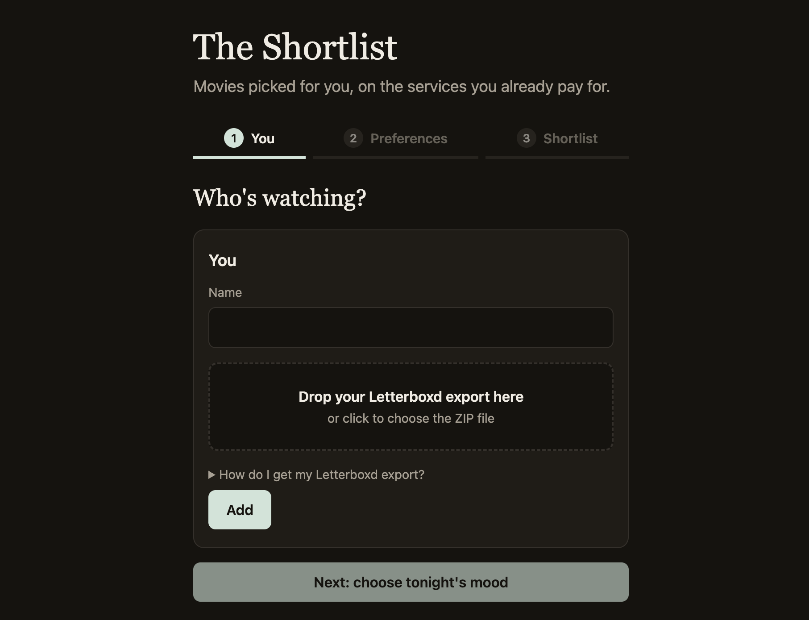
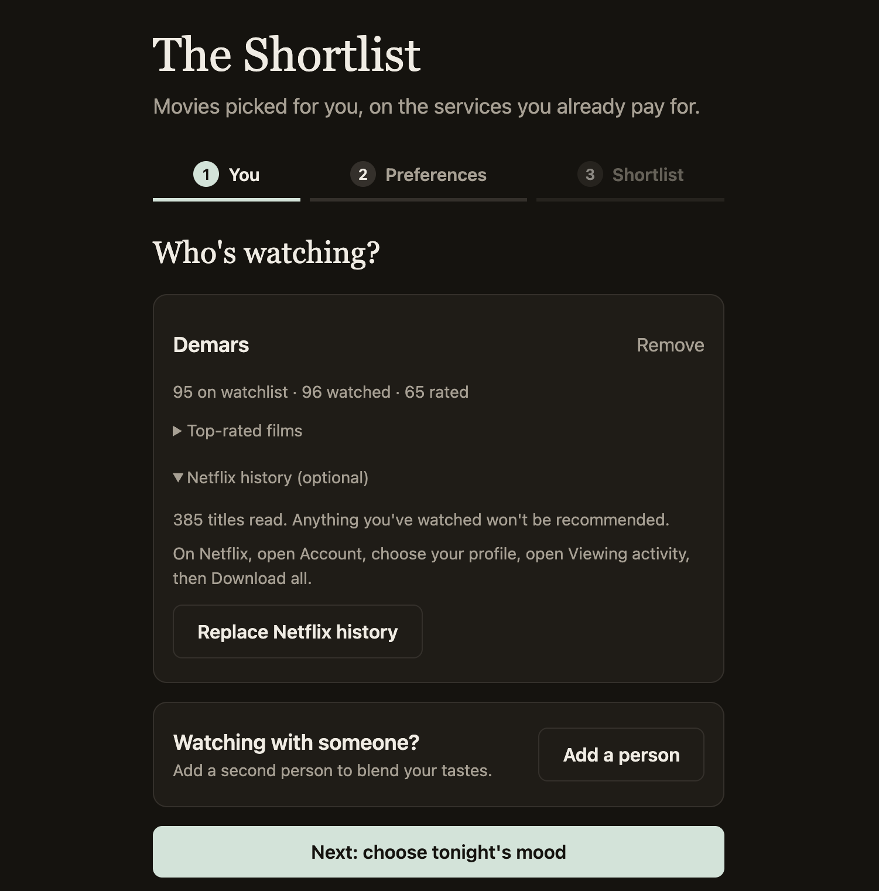
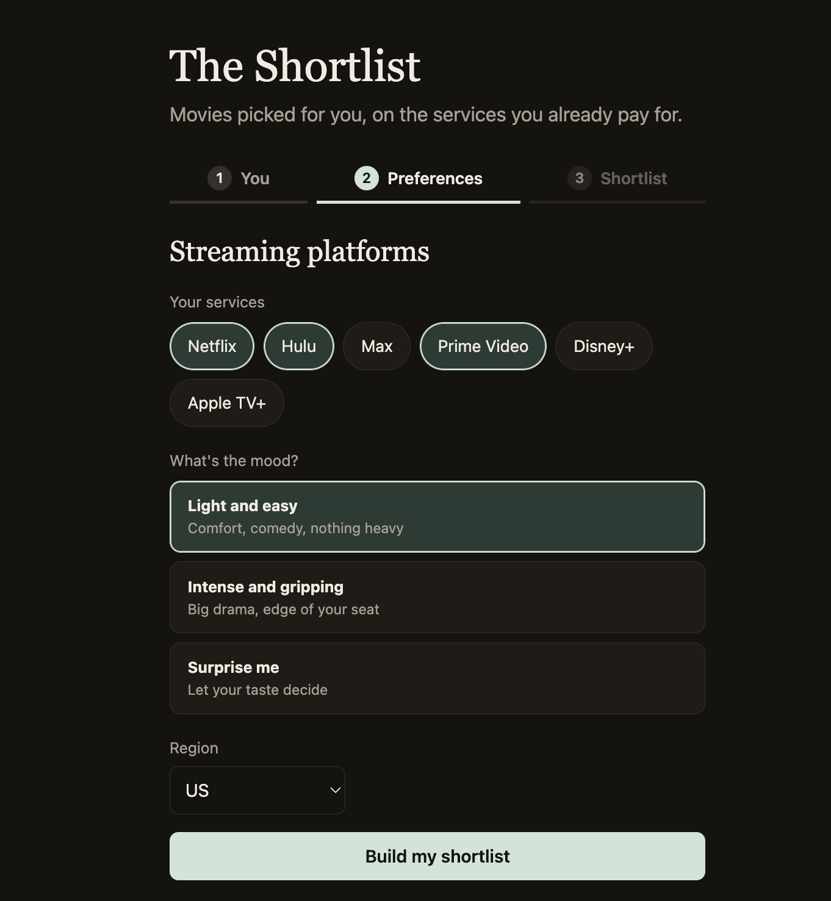
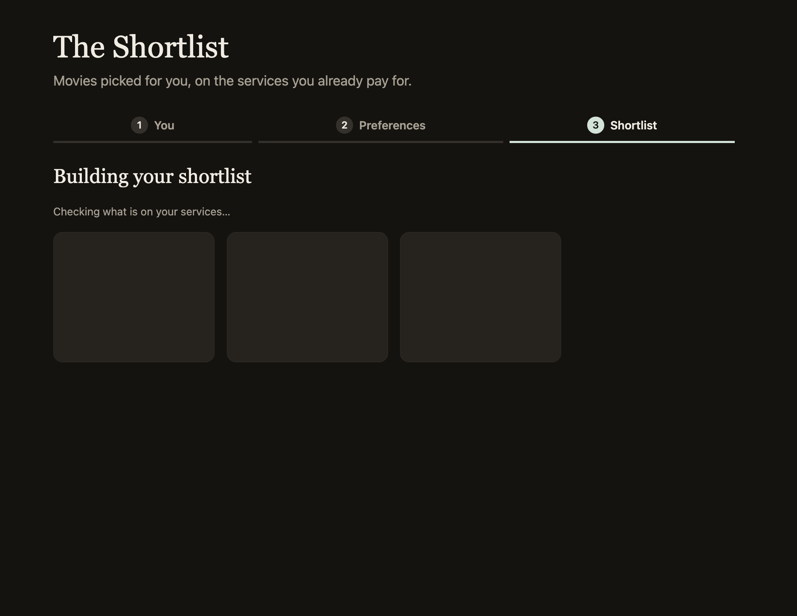
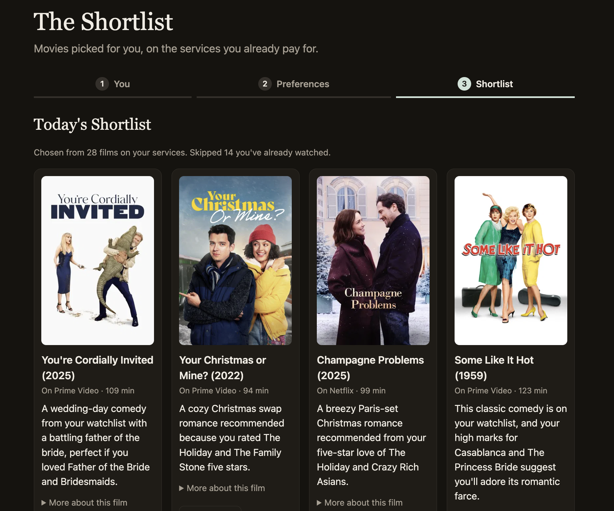
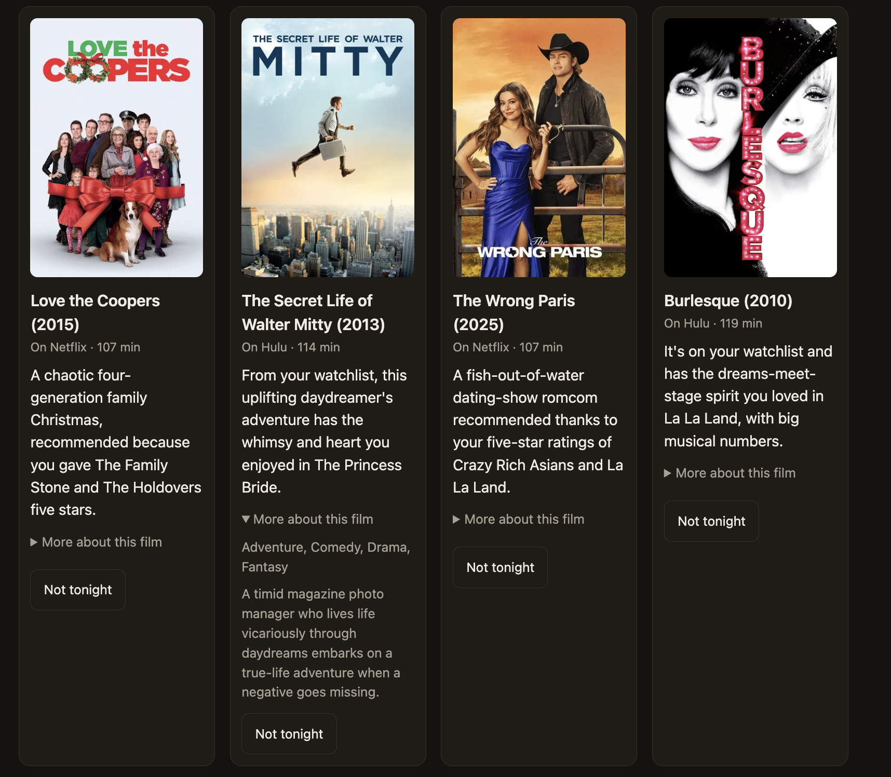

Product Showcase (Prototype / Live App / 2-Min Video)
Current Status: Build 1: local prototype
Demo:






Living PRD (Product Requirements Document)
Updated every week as we test with real users and learn what works.
1. Target User & The Job to Be Done
Who is this for? Movie/tv show watchers
The painful "Before" workflow: Watching alone: Open Netflix and scrolls, switches to Max, then Hulu. They remember a movie on their Letterboxd watchlist and have to see whether any of their services stream it. After 20 to 30 minutes, user often settles for a rewatch or give up and scroll social media instead.
Watching together: The same search happens, but now with two people trading suggestions and vetoing each other's picks. It often takes 30 to 60 minutes and ends with a compromise or taking signficantly longer to get to the match.
Why is the manual process slow?
- Siloed catalogs. Each streaming app only shows its own titles, so you have to check them one by one.
- One-person recommendations. Each platform recommends from one profile's history on one service. None can combine two people's tastes.
- Disconnected watchlists. Letterboxd watchlists sit apart from what's actually streamable tonight.
- Group watch typically occurs at the end of the day when people are tired
The "After" workflow with this product:
- One-time setup (about 5 minutes): User imports their Letterboxd and streaming platform history and watchlist, then selects their streaming services to build their personal taste profile.
- Solo night (under 2 minutes): User answers a 10-second mood check-in, such as light or intense? and movie or episode? The app shows their five or six picks, all on services they already have. Each comes with a trailer and a “why this pick” line. They tap one, and it opens in its streaming app.
- Group watch (under 2 minutes): User taps “Blend with me.” The app combines each persons profile and shows our taste match score, then Today's Shortlist: picks available on services we both have, each labeled “yours / mine / both.” We each veto one, or use a single daily reroll, and the last title standing opens with one tap.
2. Scope & Explicit Non-Goals
- In Scope (Core Workflow): Users answer a quick mood check-in and the app shows a shortlist of movie recommendations. Blend will also be available where a shared session will blend multiple profile tastes and provide a shared shortlist. Each pick has a “why this pick” line and a “yours / mine / both” label.
- Out of Scope #1:Linking streaming accounts automatically. Netflix, Hulu, and Max don't offer public APIs for watch history, so users upload export files instead of logging in.
- Out of Scope #2:TV Shows - Initial product will only have movie recommendations
- Out of Scope #3:Feedback: Users can veto picks or reroll once, and they record “loved it / not for me / not tonight” feedback that shapes the next shared shortlist.
3. How It Works Under the Hood & Riskiest Assumption (Week 2+)
Riskiest Assumption:Users will trust a shortlist of movies enough to pick one and press play, instead of going back to scrolling. If the recommendations feel random the user will go back to scrolling on streaming platforms, resulting in the app further extending the search process.
Simple Architecture:
- User Input: Letterboxd export files (CSV), streaming services watch history, the streaming services we share, and tonight's mood
- Your App: App that reads the CSV files, identifies each person's highly rated films and watchlist, builds taste profile for the user, builds movie shortlist using taste profile data + current preferences (TMDB data will narrow down list to only include movies that are available on platforms the user is subscribed to)
- AI Model / Tool: TMDB API (movie details and where-to-watch data), Claude model to blend both taste profiles with tonight's mood, ranks the candidates, and writes a “why this pick” line
- Output: Today's Shortlist: Movie cards with posters, the “why” line, trailer, etc.
4. Unit Economics & Analytics Snapshot (Updated Weekly)
Cumulative Build Spend
≈ $1.15
Claude API calls during testing.
Est. Cost Per User Run
≈ $0.05
Per six-film shortlist with Claude Opus 5.5. About $0.09 when a failed answer is retried.
User Evidence (Analytics from Build 2)
[Not yet measured]
Sponsor Call (Week 6)
TBD
Weekly Build Log
Build on at least two separate days each week outside class, including the November 3 break. Push commits and log actual progress, failures, PRD changes, costs, and hours here. All build deadlines are noon, New York time.
Build 1 · Intent.md & Throwaway Prototype (Due Nov 9)
- What shipped:Initial proof of concept and local prototype for the The Shortlist movie recommendation product.
- Things learned with AI: Test functionality with real time data early to verify. The first real run showed that a long watchlist crowded out taste-based picks.
- What broke / changed in PRD: The PRD now promises five or six picks instead of three. A ten-film version was tried first, but only 1 of 3 real runs succeeded.
- Cost & time this week: ≈ $1.15 in Claude API calls; 4 hours
Build 2 · Smallest Local Version & PostHog (Due Nov 16)
- What shipped: [Local working slice, PostHog verified on this page and the local app, PRD v2, and local setup in AGENTS.md]
- What broke / changed in PRD: [Fill in]
- Cost & time this week: $[0.00] · [0] hours
Build 3 · Build.exe: The Core Workflow (Due Nov 23)
- What shipped: [End-to-end workflow working with real inputs + PostHog funnel events]
- What broke / changed in PRD: [Fill in]
- Cost & time this week: $[0.00] · [0] hours
Build 4 · Test.py: Choose Track A or Track B (Due Nov 30)
- Chosen track: [A: 10-case domain eval and one outside target-user review; OR B: 3–5 outside users and replay findings]
- Results and improvements: [Before/after evidence; for Track B, fixes to the top three friction points]
- PRD v4 changes: [What the evidence changed]
- Cost & time this week: $[0.00] · [0] hours
Build 5 · Ship.installer: Launch Ops, Rollback Check & 2-Min Video (Due Dec 7)
- Launch Ops & Safety: [Verified no exposed keys, set spend cap, tested 2-minute rollback]
- 2-Minute Video & Final Polish: [Link/embed above]
- Cost & time this week: $[0.00] · [0] hours